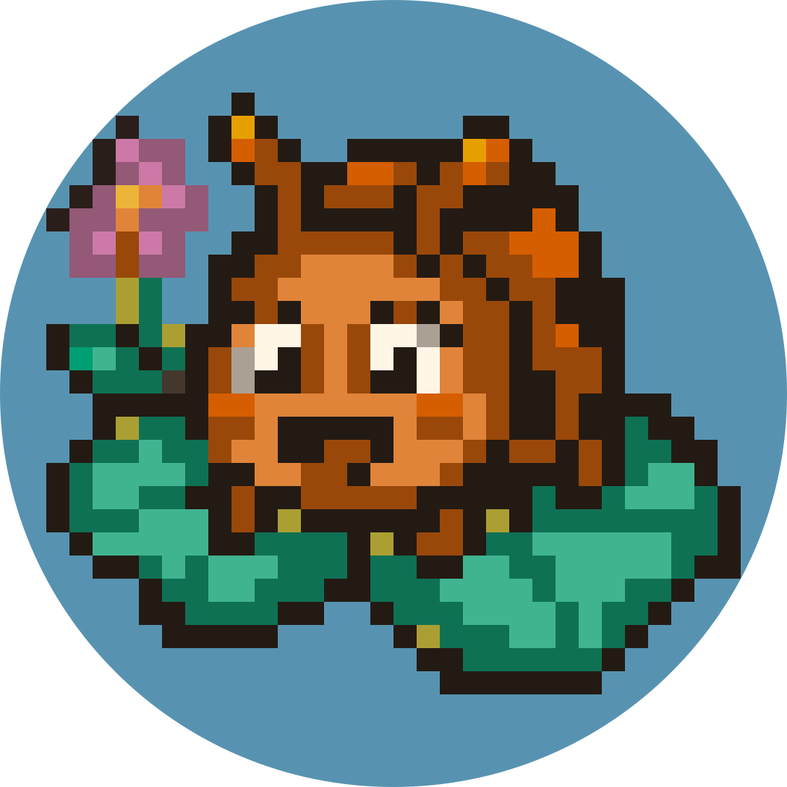
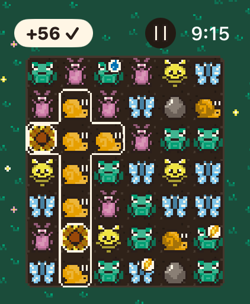
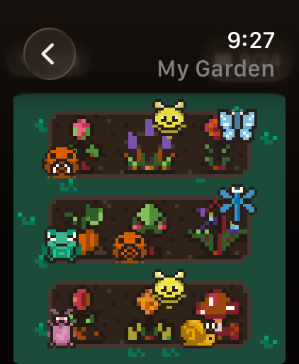
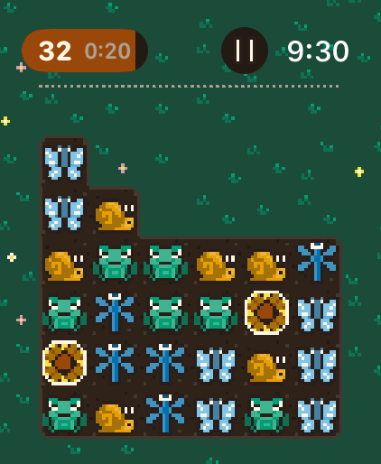
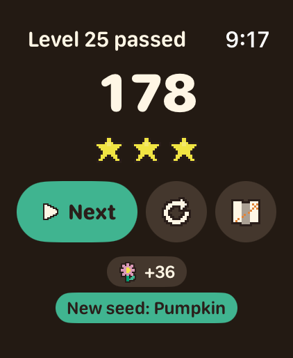
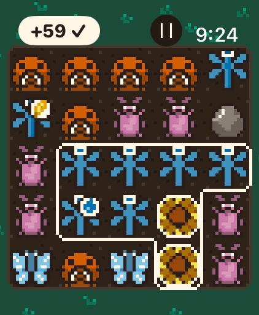
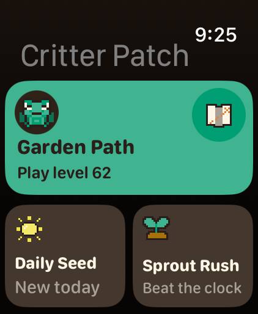
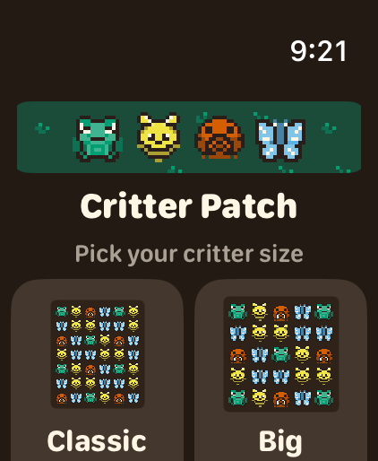

Critter Patch press kit
A cozy pixel-art puzzle game made only for Apple Watch.
Fact sheet
| Developer | Harold Lagroue (solo developer) |
|---|---|
| Release | October 2026 |
| Platform | Apple Watch only (watchOS 26 or later), every current size |
| Price | $1.99, one purchase. No ads, no in-app purchases, no tracking. |
| App Store | https://apps.apple.com/app/id6819066528 |
| Press contact | Open an issue; promo codes on request |
In one sentence
Tap groups of matching garden critters, watch them tumble, and grow a tiny garden with the petals you earn, in boards that take about a minute on your wrist.
Description
Critter Patch is a cozy pixel-art puzzle game designed for Apple Watch from the start. Tap a group of two or more matching critters to clear them: the critters above tumble down, the empty columns slide together, and bigger groups score far more points.
There are four ways to play. Garden Path has 120 levels in six garden chapters with up to three stars each. Daily Seed is one new board every day, the same for everyone. In Sprout Rush, new rows grow in on a clock that keeps speeding up, and the question is how long you can keep the patch from overflowing. Daydream is endless boards with no target and no game over.
Every critter you clear earns a petal. Petals grow 24 plants in a small garden, each bloom draws a critter visitor, and a seed book keeps every plant you've grown. There are no timers, no energy, and nothing to come back for.
Highlights
- Made for the wrist: the Digital Crown moves the highlight between groups, Double Tap clears on supported watches, and boards fit every current Apple Watch size.
- Garden helpers: Sunflowers join any group, Golden Leaves double a group's points, Watering Cans clear a whole column, and pebbles get in the way.
- Each of the 120 levels was picked from dozens of candidate boards, each one played by hundreds of simulated players, for a smooth climb in difficulty.
- Original pixel art on a 40-color palette, and chiptune sound effects synthesized from scratch.
- Accessible: Big Critters (5 × 5), color-blind pattern marks, VoiceOver, Reduce Motion, and Larger Text.
- Fully offline. Progress stays on the watch.
Trailer
Screenshots
Real screens from the 49 mm Apple Watch. Click for the 2× version (844 × 1028, enlarged without smoothing).














Downloads
- App icon, 1088 × 1088
- Trailer, vertical 1080 × 1920 (21 s)
- Gameplay, vertical (10 s)
- Sprout Rush, vertical (14 s)
- My Garden, vertical (6 s)
- Trailer, watch screen only (844 × 1028)
- Gameplay GIF
- Sprout Rush GIF
- My Garden GIF


Critter Patch · Support · Privacy policy · © 2026 Harold Lagroue